Image classification with Azure Machine Learning
Overview
Microsoft Azure Storage is a set of services that allows you to store large volumes of data in a cost-effective manner and in a way that makes the data readily and reliably available for consumption. Data committed to Azure Storage can be stored in blobs, tables, queues, or files. Azure blobs are ideal for storing images, videos, and other types of data, and are frequently used to provide input to and capture output from other Azure services such as Azure Machine Learning and Azure Stream Analytics. Azure tables provide NoSQL storage for semi-structured data. Azure queues support queued message transfers between applications (or parts of applications) and can be used to make applications more scalable and robust by loosely coupling them together. Finally, Azure Files use the Server Message Block (SMB) protocol to share files through the cloud and access storage as network drives.
Data stored in Microsoft Azure Storage can be accessed over HTTP or HTTPS using straightforward REST APIs, or it can be accessed using rich client libraries available for many popular languages and platforms, including .NET, Java, Android, Node.js, PHP, Ruby, and Python. The Azure Portal includes basic features for working with Azure Storage, but richer functionality is available from third-party tools, many of which are free and some of which work cross-platform.
In this lab, you will learn how to work with storage accounts, storage containers, and storage blobs. You'll also get familiar with some of the tools used to manage them, including the Microsoft Azure Storage Explorer, a free tool from Microsoft that runs on Windows, macOS, and Linux. The knowledge you gain will be used in later labs featuring Azure services that rely on blob storage for input and output, and will serve you well when you use Azure in your research.
Objectives
In this hands-on lab, you will learn how to:
- Create storage accounts using the Azure Portal
- Create storage containers using the Microsoft Azure Storage Explorer
- Upload blobs to storage using the Microsoft Azure Storage Explorer
- [Optional] Download blobs from storage using the Azure Portal
- [Optional] Share blobs with other researchers
- Work with Azure Machine Learning Studio
- Prepare input image data and use it to train an SVM based model
- Score the model and evaluate its accuracy
- Deploy the model as a Web service
- [Optional] Delete storage accounts using the Azure Resource Manager
Prerequisites
The following is required to complete this hands-on lab:
Exercises
This hands-on lab includes the following exercises:
Estimated time to complete this lab: 45 minutes.
Exercise 1: Use the Azure Portal to create a storage account
The Azure Portal allows you to perform basic storage operations such as creating storage accounts, viewing what's stored under those accounts, and managing the access keys associated with the accounts. In this exercise, you'll use the portal to create a storage account.
-
Open the Azure Portal in your browser. If you are asked to sign in, do so with your Microsoft account.
-
The first step in using Azure Storage is to create one or more storage accounts. To create a storage account, click + New in the ribbon on the left. Then click Storage, followed by Storage account.

Adding a storage account
-
In the ensuing blade, enter a name for the new storage account in Name field. The name is important, because it forms one part of the URL through which blobs created under this account can be accessed.
Storage account names can be 3 to 24 characters in length and can only contain numbers and lowercase letters. In addition, the name you enter must be unique within Azure; if someone else has chosen the same name, you'll be notified that the name isn't available with a red exclamation mark in the Name field.
Once you have a unique name that Azure will accept (as indicated by the green check mark in the Name field), select Create new under Resource group and type "StorageLabResourceGroup" (without quotation marks) into the box below to name the resource group that will be created for the storage account. Select the location nearest you in the Location box. Then click the Create button at the bottom of the blade.

Creating a storage account
-
Click Resource groups in the ribbon on the left side of the portal to list all of your resource groups. In the "Resource groups" blade, click the StorageLabResourceGroup resource group. Once the blade showing the contents of the resource group appears, click the storage account that you created in the previous step.

Opening a storage account
-
In the blade for the storage account, click Blobs to view a list of blob containers.

Viewing blob containers
The storage account currently has no containers. Before you create a blob, you must create a container to store it in. You can create containers and upload blobs in the Azure Portal, or you can use external tools that offer additional features that the portal does not. In Exercise 2, you will use the cross-platform Microsoft Azure Storage Explorer to create containers and upload blobs.
Exercise 2: Use Storage Explorer to create a container and upload blobs
A container is similar to a folder in a file system. A storage account can have an unlimited number of containers, and a container can store an unlimited number of blobs. Container names must be from 3 to 63 characters in length and may contain numbers, dashes, and lowercase letters. Dashes cannot be consecutive, and a container name cannot start with a dash. The following diagram illustrates the blob storage schema:

Blob storage schema
In this exercise, you will create a container named "images" in the storage account you created in Exercise 1. Then you will upload several blobs to it.
-
In your browser, go to http://storageexplorer.com/ and download and install the Microsoft Azure Storage Explorer.
-
Start Storage Explorer. If you are asked to log in, do so using your Microsoft account — the same one that you used to log in to the Azure Portal. If you are not asked to log in and don't see the storage account you created in the previous exercise in Storage Explorer's left pane, click the Azure Accounts settings button highlighted below, click Add an account, and log in with your Microsoft account.

Adding an account to Storage Explorer
-
In Storage Explorer, click the small arrow next to the storage account you created in Exercise 1 to reveal the items underneath it. Then right-click Blob Containers (on a Mac, Control-click instead) and select Create Blob Container from the context menu.

Creating a container
-
Type "images_bcc" (without quotation marks) into the box that appears under Blob Containers. Then press Enter to create a new container named "images_bcc".
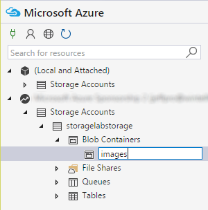
Creating an "images_bcc" container
-
Type "images_hpcnone" (without quotation marks) into the box that appears under Blob Containers. Then press Enter to create a new container named "images_hpcnone."
![Creating an "images_hpcnone" container]
Creating an "images_hpcnone" container
-
The next step is to create blobs by uploading files to the 2 containers created above. The files you will upload are described and provided at the location https://github.com/dani-lbnl/ImageXD_2017. Once you download the files, you will notice that there are two separate folders, each containing one class of labeled images. Click the Upload button in the Storage Explorer. Then select Upload Files... from the menu.

Uploading files to the "images" container
-
Click the ... button to the right of the field labeled "Files." In the ensuing dialog, navigate to this files that you previously downloaded and select all the files in each subdirectory. (There are 10 of them, and each has the file-name extension .jpg.) Then close the dialog and click the Upload button.

Uploading files to blob storage
The default blob type — block blob — supports up to approximately 4.75 TB of data per blob. Append blobs are similar to block blobs but are optimized for append operations. Page blobs can hold up to 1 TB of data and are used to hold virtual hard disks (VHDs) for virtual machines.
-
Confirm that all ten .jpg files were uploaded to the "images" container.

Blobs uploaded to the "images" container
Uploading blobs is easy with the Microsoft Azure Storage Explorer. Now let's learn how to download blobs.
Exercise 3: Use the Azure Portal to download a blob
You can download a blob using the Azure Storage Explorer by selecting the blob and clicking the Download button, or by right-clicking the blob and selecting Download from the ensuing menu. You can also download blobs using the Azure Portal. In this exercise, you'll use the portal to download one of the blobs you uploaded in the previous exercise.
-
Return to the Azure Portal in your browser. If you left the blade for the storage account open at the end of Exercise 1, click the Refresh button at the top of the blade to refresh the list of containers. If you didn't leave it open, navigate back to it. The click the "images" container to view its contents.

Viewing the blobs in the "images" container
-
Verify that azure-banner.jpg appears in the list of blobs. Then click it to open the "Blob properties" blade.

Image blobs uploaded to Azure Storage
-
Click the Download button at the top of the blade to download azure-banner.jpg.
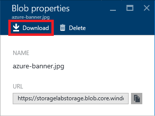
Downloading a blob
-
Confirm that azure-banner.jpg appears in your browser:

Image blob downloaded from Azure Storage
Now that you know how to upload and download blobs, it is time to think about the privacy of those blobs and how to share them with other researchers.
##(Optional) Exercise 4: Share blobs using public containers ##
Each container that you create is assigned an access level that determines whether its contents are public or private. The default is private, which means that only you (or someone to whom you provide an access key for the storage account) can access the container's blobs. In this exercise, you will make the "images" container public and demonstrate that you can easily share blobs inside it using links that can be opened in a browser.
-
Return to the Microsoft Azure Storage Explorer and right-click (on a Mac, Control-click) the "images" container and select Set Public Access Level.

Changing the container's access level
-
Select Public read access for blobs only. Then click the Apply button.

Setting the access level to public
The difference between Public read access for blobs only and Public read access for container and blobs is that the latter allows the blobs in a container to be enumerated, while the former does not. Public read access for blobs only offers slightly more security because it prevents people from discovering other blobs in the container. To fetch the blob, they must know the blob's name.
-
Right-click azure-banner.jpg and select Copy URL to Clipboard.
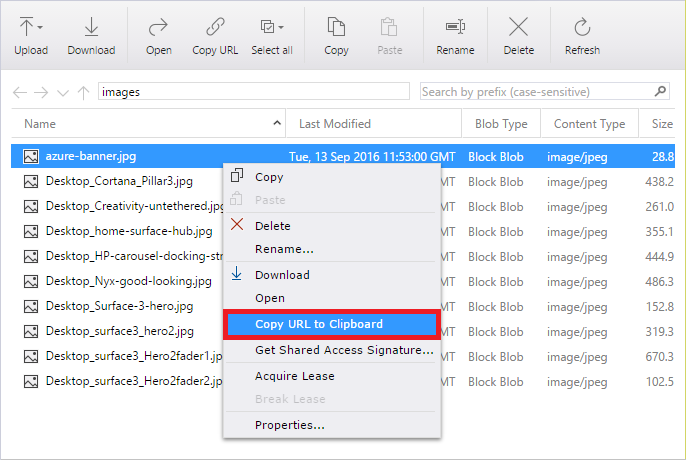
Getting a blob URL
-
Now paste the URL into your browser's address bar. Confirm that the browser shows azure-banner.jpg:

Image blob downloaded from Azure Storage
-
Return to the Microsoft Azure Storage Explorer, right-click the "images" container, select Set Public Access Level again, and this time set the container's access level to No public access.

Setting the access level to private
-
Copy the URL for azure-banner.jpg to the clipboard again and paste it into your browser's address bar. Confirm that the image can't be downloaded this time.
The screen shot below was taken in Microsoft Edge. The exact output will vary from browser to browser, and Chrome will probably say "This XML file does not appear to have any style information associated with it."

404 error
Making a container public is one way to share the blobs with other people. But what if you only wanted to share selected blobs in that container while keeping the others private? And what if you wanted to limit the amount of time that the blob can be downloaded? That's where shared-access signatures come in.
##(Optional) Exercise 5: Share blobs using shared-access signatures ##
Rather than create a separate (public) container to hold the blobs you wish to share, you can use shared-access signatures to share blobs from private containers. In this exercise, you will generate a URL containing a shared-access signature (SAS) for one of the blobs in the "images" container and demonstrate that the blob can be downloaded even though the container is private. You will also learn how to limit the amount of time a shared-access signature is valid.
-
Return to the Microsoft Azure Storage Explorer. Right-click azure-banner.jpg and select Get Shared Access Signature.
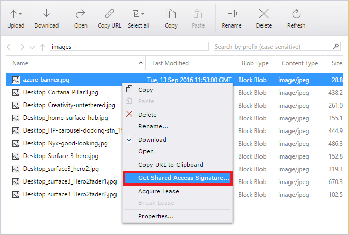
Getting a shared-access signature
-
Set Start time to yesterday's date and Expiry time to a date a few days from now. Then click the Create button.

Creating a shared-access signature
-
Click the Copy button to the right of the URL field to copy the blob URL containing a shared-access signature to the clipboard. Then click the Close button.
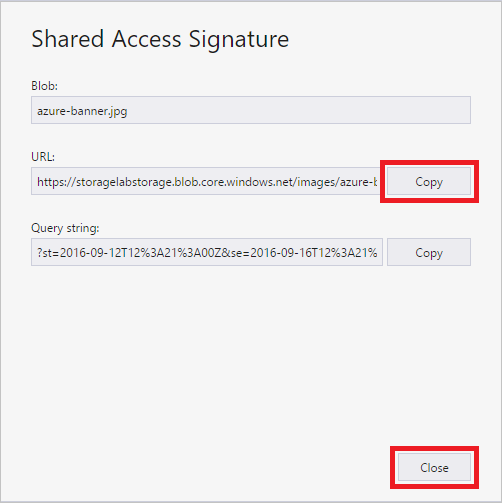
Copying a SAS URL to the clipboard
-
Paste the URL into your browser's address bar and confirm that azure-banner.jpg appears, even though the container that holds it is private rather than public.

Using a SAS URL to download a blob
Take a moment to examine the URL that you pasted into the browser. The long query string — everything after the question mark — is the shared-access signature. Embedded within it is information about when the signature expires. The signature is cryptographically signed so it can't be tampered with. For more information on shared-access signatures and their application to Azure Storage, see Shared Access Signatures, Part 1: Understanding the SAS model.
Exercise 6: Create an experiment and load a dataset
The first step in building a machine-learning model with Azure Machine Learning is to use ML Studio to create an experiment and load data into it. Azure Machine Learning Studio comes with several sample datasets. However, in this exercise, you will load the data that you uploaded to your storage account above.
-
In your Web browser, navigate to http://studio.azureml.net and click the Sign In button. If you are asked to log in, do so using your Microsoft account.
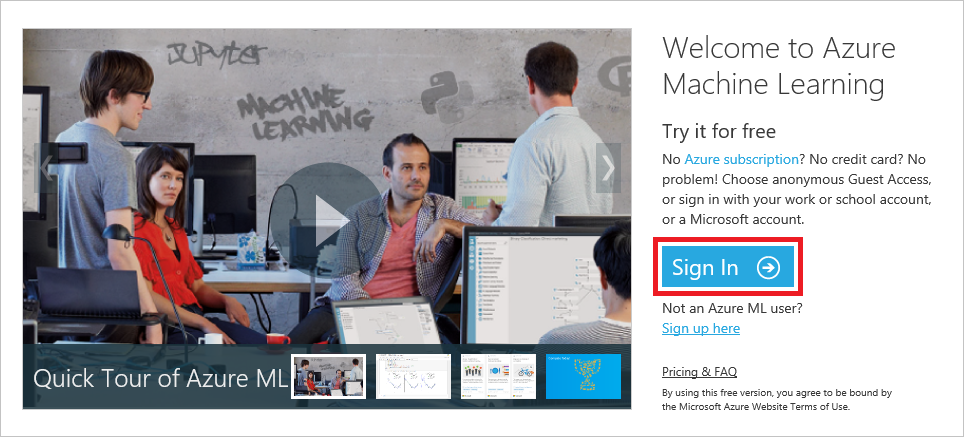
Signing in to ML Studio
-
Start a new experiment by clicking + NEW in the lower-left corner of the page, followed by Blank Experiment.

Creating a blank experiment
-
Click the default experiment name at the top of the canvas and change it to "Image Classifier" (without quotation marks).

Naming the experiment
-
To the left of the experiment canvas is the modules palette. Type "import " in the search box at the top of the modules palette to find the Import Images module.

Finding a dataset
-
Drag the Import Images* module from the modules palette and drop it onto the experiment canvas.

a dataset_
-
To see what this dataset looks like, click the output port (the circle with the "1" in it) at the bottom of the dataset and select Visualize.

Visualizing the dataset
-
The values in the dataset appear as columns, with each row representing an automobile and each column representing an automobile feature. The far-right column titled "price" is the target variable for your predictive analysis. Scroll to the right until you see this column. Then click it to select it.
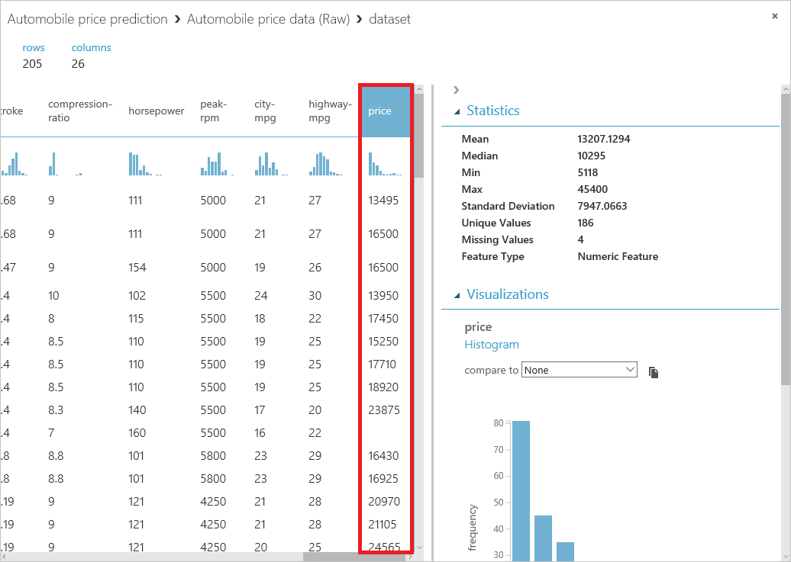
Viewing the raw data
-
Close the visualization window by clicking the "x" in the upper-right corner.
In this exercise, you learned how to create a new ML experiment and import a sample dataset. Note that you can upload custom datasets by clicking the + NEW button in the ribbon at the bottom of the window, and then clicking DATASET followed by FROM LOCAL FILE. Next up: preparing the sample data for use.
Exercise 7: Preprocess the data
No dataset is perfect. Most require some amount of preparation or cleaning before they can be used to train a model. When you visualized the data, you may have noticed that some rows were missing values. These need to be cleaned up before training begins. In this exercise, you will remove any rows that have missing values. In addition, the "normalized-losses" column has a lot of missing values, so you'll exclude that column from the model.
-
At the top of the modules palette, type "select columns" (without quotation marks) into the search box to find the Select Columns in Dataset module. Drag the module over to the experiment canvas and connect it to the output port of the Automobile price data (Raw) dataset by dragging an arrow downward from the output port. The Select Columns in Dataset module allows you to specify which columns of data to include or exclude in the model.
A key concept to understand in Azure ML Studio is that of ports and connectors. In this step, you connected the output port of the data module to the input port of the Select Columns in Dataset module. The data flows from one module to the next through the connector. Some modules have multiple input and output ports. If you want to know what a port does, hover over it with the mouse and a tooltip will pop up. To call up the documentation for an entire module, right-click (on a Mac, Command-click) the module and select Help from the ensuing menu.
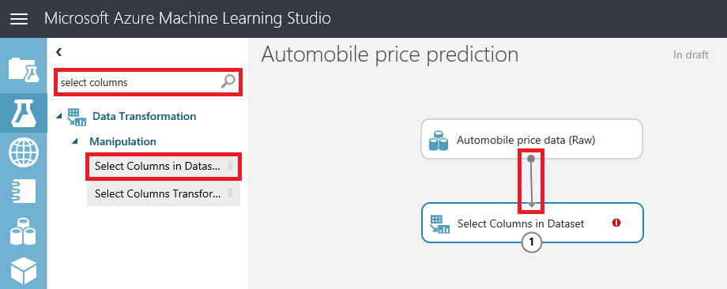
Connecting the dataset to the Select Columns in Dataset module
-
Click the Select Columns in Dataset module on the experiment canvas to make sure it's selected, and then click the Launch column selector button in the Properties pane on the right.

Launching the column selector
-
Select WITH RULES in the leftmost column, and then select ALL COLUMNS under Begin With. This tells the Select Columns in Dataset module to pass through all the columns except those you're about to exclude. In the next row, select Exclude and column names, and then click the box to the right of column names. When a list of columns appears, select normalized-losses to add that column to the text box. Then click the check mark to close the column selector.
In some browsers, the list of column names might not appear. If they don't appear for you, simply type the column name ("normalized-losses") into the box. The column names will sometimes appear when you begin typing.
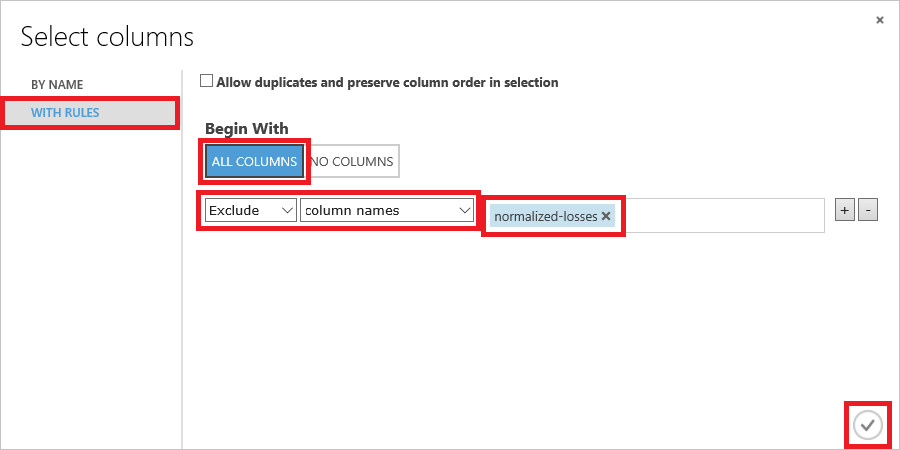
-
In ML Studio, you can annotate modules with comments to help document your experiment. To demonstrate, double-click the Select Columns in Dataset module and type "Exclude normalized-losses" in the text box that pops up. When you're finished typing, click outside the text box. To display the comment, click the down-arrow on the right side of the module. If you wish to change the comment, simply right-click (or Command-click) the module and select Edit Comment from the menu that pops up.
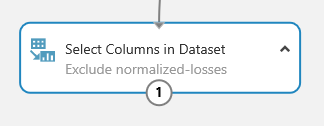
Annotating modules with comments
-
Now it's time to remove rows containing blank values. Type "clean" (without quotation marks) into the search box at the top of the modules palette. Add a Clean Missing Data module to the experiment canvas and connect it to the output of the Select Columns in Dataset module. In the Properties pane, select Remove entire row from the list under Cleaning mode to remove rows that have at least one missing value.

Removing rows with missing values
-
Double-click the Clean Missing Data module and enter the comment "Remove rows with missing values."
-
Click the SAVE button at the bottom of the canvas to save the experiment.
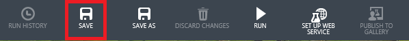
Saving the experiment
When working with Azure Machine Learning Studio, get in the habit of saving your experiments often. That way, if you encounter a problem, you will not have to replicate steps to get caught up. Also, be aware that you may lose your work if you click the browser's Back button without saving your experiment first.
-
Click the RUN button at the bottom of the canvas to run the experiment.
-
Wait for the run to finish. Then click the left output port of the Clean Missing Data module and select Visualize. Notice that the "normalized-losses" column is no longer present, and there are no rows with missing values.
-
Close the visualization window by clicking the "x" in the upper-right corner.
In this exercise, you learned about two ways to clean input data in preparation for training a model. The data is ready; now it's time to work on the model itself.
Exercise 8: Define the features
In machine learning, features are individually measurable properties of the data that you're analyzing. In the Automobile price data (Raw) dataset, each row represents one automobile, and each column represents a feature of that automobile. Identifying features for a robust and accurate predictive model frequently requires experimentation and domain knowledge of the problem you're trying to solve. Some features are better for predicting target values than others. For example, it's likely that there is some correlation between engine size and price, because larger engines cost more. But intuition tells us that miles per gallon might not be a strong indicator of price. In addition, some features have a strong correlation with other features (for example, city-mpg versus highway-mpg), and can therefore be excluded since they add little to the model.
It is time to build a model that uses a subset of the features in the dataset. You will use the following features (columns), which include the "price" feature that the model will attempt to predict:
- make
- body-style
- wheel-base
- engine-size
- horsepower
- peak-rpm
- highway-mpg
- price
If needed, you can always refine a model later by selecting different features.
-
Drag another Select Columns in Dataset module to the canvas and connect it to the left output port of the Clean Missing Data module.

Adding another Select Columns in Dataset module
-
Select the module you just added and click Launch column selector in the Properties pane.
-
Select WITH RULES in the leftmost column, and select NO COLUMNS under Begin With. Then select Include and column names in the filter row. This directs the module to pass through only the columns that are specified. Now click the box to the right of column names and select the columns pictured below. Finish up by clicking the check mark in the lower-right corner.

Selecting the model's features
-
Click the SAVE button at the bottom of the canvas to save the experiment.
-
Click the RUN button at the bottom of the canvas to run the experiment.
-
Click the output port of the second Select Columns in Dataset module and use the Visualize command to confirm that the output contains just the eight columns that you selected in Step 3. Then close the visualization window by clicking the "x" in the upper-right corner.
You're getting close! Now comes perhaps the most important part of the process: selecting a learning algorithm and training the model.
Exercise 9: Select a learning algorithm and train the model
Now that the data is ready and the features are selected, constructing a robust predictive model requires training and testing the model. You will use part of the dataset to train the model, and another part of it to measure how adept the model is at predicting automobile prices.
Before you can train the model, you must select a learning algorithm to use. Classification and regression are two types of supervised machine-learning algorithms. Classification is used to make a prediction from a defined set of values, such as the make of a car (for example, Honda or BMW). Regression is used to make a prediction from a continuous set of values, such as a person's age or the price of an automobile. Azure Machine Learning offers several types of classification and regression algorithms for you to choose from, as well as algorithms of other types.
The Azure Machine Learning team has put together a "cheat sheet" to help you decide which machine-learning algorithm to choose based on the purpose of your model. You can view it at http://aka.ms/MLCheatSheet.
The goal of this lab is to predict the price of an automobile from a set of input features, so you will use a regression model. In this exercise, you will train a simple linear-regression model, and in the next exercise, you will test the results.
-
You can use a single dataset for training and testing by splitting its output. Find the Split Data module in the modules palette and drag it over to the canvas. Then connect the output of the last Select Columns in DataSet module to the Split Data module. Set Fraction of rows in the first output dataset to 0.8. This will use 80% of the data to train the model, and hold back 20% for testing. Leave Random seed set to 0. This parameter controls the seeding of the pseudo-random number generator and allows you to produce different random samples by entering different values.

Splitting the data
-
Click the SAVE button to save the experiment.
-
Click the RUN button to run the experiment.
-
To specify a learning algorithm, type "linear" into the search box in the modules palette. Then drag a Linear Regression module onto the canvas.
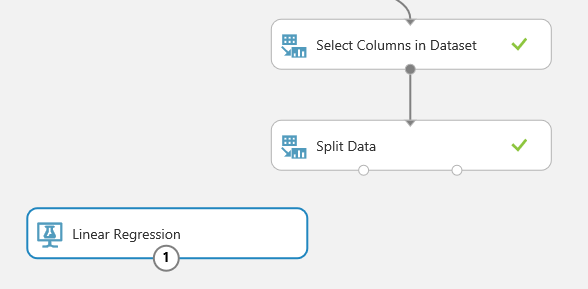
Adding a Linear Regression module
-
Add a Train Model module to the canvas. Connect the output of the Linear Regression module to the left input of Train Model, and the output from Split Data to the right input of Train Model. Then select the Train Model module and click Launch column selector in the Properties pane.
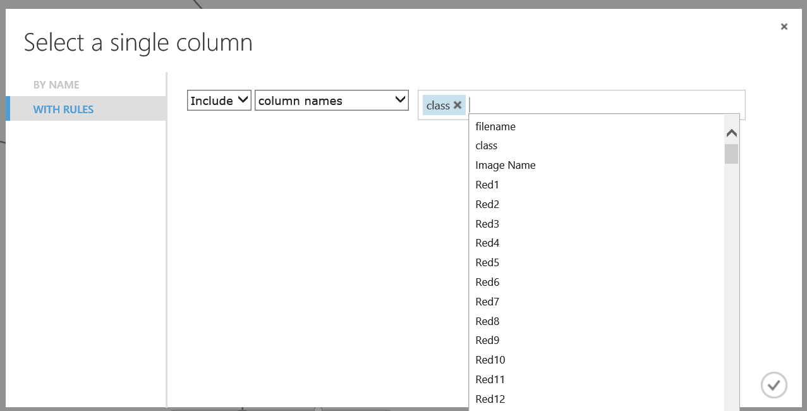
TAdding a Train Model module
-
Select WITH RULES on the left and make sure Include and column names are selected in the drop-down lists. Then add the "price" column to the box on the right. This is the value that your model is going to predict. Finish up by clicking the check mark in the lower-right corner.
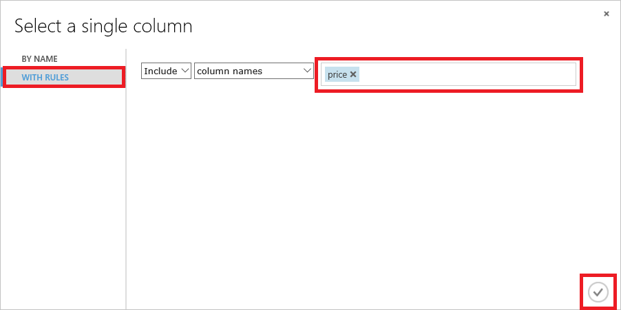
Specifying the output variable
-
Click the SAVE button to save the experiment.
-
Click the RUN button to run the experiment.
You now have a trained regression model. The next step is to score the model to see how adept it is at predicting automobile prices.
Exercise 10: Score the model
In this exercise, you will score the model you trained in the previous exercise. Scoring determines how well the model was trained — that is, how adept it is at predicting target values from values presented to it. ML Studio makes the scoring process very easy. You used 80% of the dataset that you uploaded to train the model. You will use the remaining 20% to score it
-
Add a Score Model module to the canvas. Connect the output of the Train Model module to the Score Model module's left input port. Then connect the right output port of the Split Data module to the right input port of the Score Model module. That connection represents the 20% of the data that was not used for training.
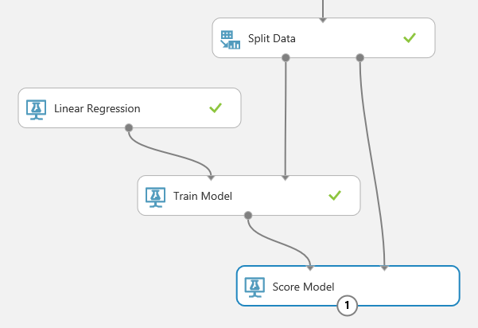
Adding a Score Model module
-
Click the SAVE button to save the experiment.
-
Click the RUN button to run the experiment.
-
After the run finishes, click the output port of the Score Model module and select Visualize. The output shows the known values for price from the dataset followed by the predicted values determined by the algorithm. You may have to scroll the table to the right to see the "price" and "Scored Labeled" columns.
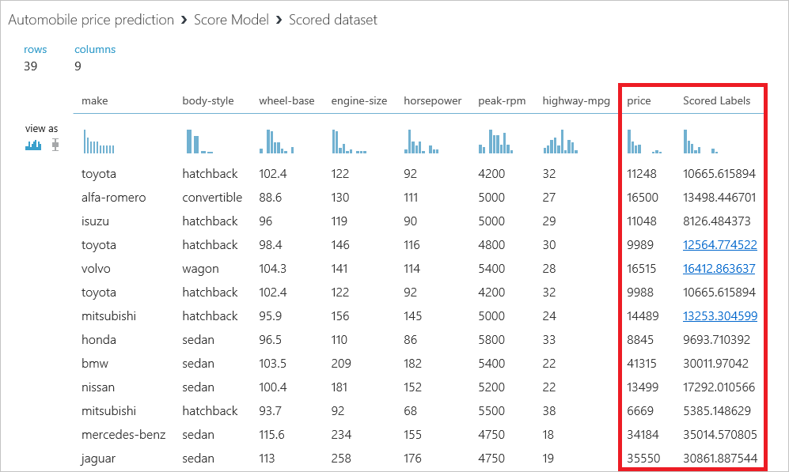
The scored data
-
Close the visualization window by clicking the "x" in the upper-right corner.
-
To evaluate the quality of the results, add an Evaluate Model module to the experiment canvas. Connect the output port of the Score Model module to the left input port of the output of the Evaluate Model module. (There are two input ports because Evaluate Model can be used to compare two models.)

Adding an Evaluate Model module
-
Click the SAVE button to save the experiment.
-
Click the RUN button to run the experiment.
-
Click the output port of the Evaluate Model module and select Visualize from the menu.
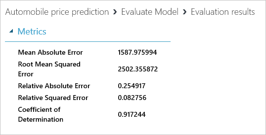
The evaluation results
Here is a quick explanation of the results:
- Mean Absolute Error (MAE): The average of absolute errors (an error is the difference between the predicted value and the actual value)
- Root Mean Squared Error (RMSE): The square root of the average of squared errors of predictions made on the test dataset
- Relative Absolute Error: The average of absolute errors relative to the absolute difference between actual values and the average of all actual values
- Relative Squared Error: The average of squared errors relative to the squared difference between the actual values and the average of all actual values
- Coefficient of Determination: Also known as the R-squared value, this is a statistical metric indicating how well a model fits the data
For each of the error statistics, smaller is better. A smaller value indicates that the predictions more closely match the actual values. For Coefficient of Determination, the closer its value is to 1.0, the better the predictions. In this case, the model was able to predict the price of a car from the test data with more than 90% accuracy.
-
Close the visualization window by clicking the "x" in the upper-right corner.
Now that the model is adequately refined (90% is indicative of a reasonably strong correlation between the input data and results), you might want to be able write programs that utilize the model. That is the subject of the next exercise.
Exercise 11: Deploy as a Web service
Once you have a trained and scored model, you can deploy it as a Web service and interact with it programmatically. Before deploying as a Web service, you need to streamline your experiment. This involves creating a new experiment from your trained model, removing unnecessary modules, and adding Web-service input and output modules. Fortunately, ML Studio can do all of this for you
-
At the bottom of the screen, click the SET UP WEB SERVICE button and in the ensuing menu, select Predictive Web Service [Recommended]. If this option is grayed out, click the RUN button and try again.

Creating a predictive Web service
-
ML Studio will spin for a few seconds, after which a predictive experiment will appear. Observe that Split Data and Train Model are gone, and that 100% of the training data now flows into Score Model. In addition, new modules were added at the top and bottom for Web-service input and output.
Don't be alarmed thinking your original model is gone. It's still there. You can get to it by clicking the Training experiment tab at the top of the page.
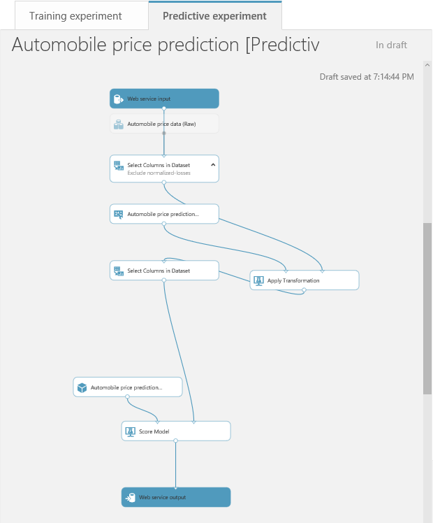
The predictive experiment
-
To create a Web service that you can call to perform predictive analytics, click RUN once more. After the run completes, click the DEPLOY WEB SERVICE button to deploy the Web service.
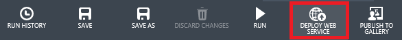
Deploying the Web service
-
In a moment, the dashboard for the new Web service appears. The dashboard includes links to Excel spreadsheets that you can download to work with the Web service by inputting values and computing prices. It also includes a Test button that you can click to test the Web service. But don't click the Test button just yet.

The Web service dashboard
-
If you click Test right now, a dialog will appear in which you enter input values before calling the Web service and getting a predicted price in return. But you would have to enter values for all of the columns in the dataset, including those that you filtered out through Select Columns in Dataset.
To fix that, you are going to modify the predictive experiment before testing it. Begin by clicking View latest in the dashboard to return to the predictive experiment.
-
Delete the arrow connecting the Web service input module to Automobile price data (raw). The drag the Web service input module down the canvas and position it above the Score Model module. Finally, connect the output from Web service input to the right input of Score Model. This will limit the inputs required to those coming into Score Model from the Select Columns in Dataset module above.
You can delete a connection between modules by right-clicking it (Command-click on a Mac) and selecting Delete from the ensuing menu.
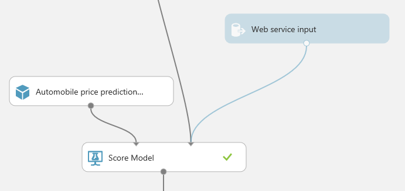
Repositioning Web service input
-
Click the Select Columns in Dataset module that is connected to the Score Model module. Then click the Launch column selector button in the Properties pane and remove "price" from the columns included in the output. This will prevent you from having to enter an input price when testing the Web serivce. (Even though the input would be ignored, it doesn't make sense to require it because the purpose of the model is to predict prices.)
-
Make a copy of the Select Columns in Dataset module that you just modified by right-clicking it and selecting Copy, and then right-clicking an empty part of the canvas and selecting Paste. Now insert the new Select Columns in Dataset module between Score Model and Web service output as shown below.

Filtering output values
-
Click the Select Columns in Dataset module that you just pasted onto the canvas to select it. Then click the Launch column selector button in the Properties pane and add "Scored Labels" to the columns included in the output. This is the price that the Web service predicts from the inputs you specify.
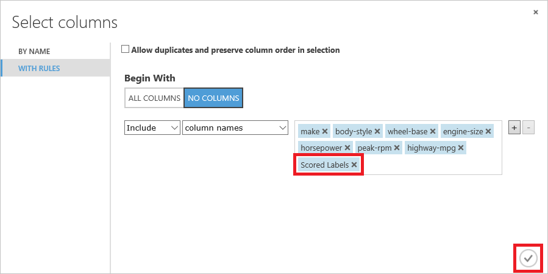
Adding "Scored Labels" to the output
-
Click the SAVE button to save the predictive experiment.
-
Click the RUN button to run the predictive experiment.
-
Click the DEPLOY WEB SERVICE button to deploy the Web service. If asked to confirm that you want to overwrite the existing predictive experiment, answer YES.
-
Click the Test button on the Web-service dashboard.
-
In the dialog that appears, enter the parameter values shown below. These parameters are features of a car whose price we want our trained ML model to predict. Enter these values in the corresponding fields in the dialog, and then click the check mark to pass the data to your Web service. Note that you may have to scroll the dialog to see all of the input fields.
| Field |
Value |
| make |
audi |
| body-style |
hatchback |
wheel-base |
99.5 |
| engine-size |
131 |
| horsepower |
160 |
| peak-rpm |
5500 |
| highway-mpg |
22 |
-
After a short pause, a report will appear at the bottom of the screen. Click the DETAILS button to see the full results. The final number in the "Scored Labels" column is the projected price.
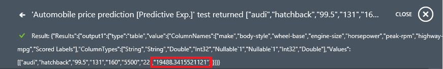
Projected price
You won't do it in this lab, but realize that you could easily write an app that calls the Web service. Click REQUEST/RESPONSE on the Web-service dashboard and scroll to the bottom of the page. There, you will see sample code in three languages (C#, Python, and R) demonstrating how to place calls to the Web service to retrieve predicted price values for a given set of inputs.
Exercise 12: Delete the resource group
When you created a storage account in Exercise 1, you made it part of a resource group named "StorageLabResourceGroup." One of the benefits of using resource groups is that deleting a resource group deletes all the resources inside it, including storage accounts and blobs. Deleting a resource group is a convenient way to delete complex Azure deployments without having to delete individual resources one by one.
In this exercise, you will use the Azure Portal to delete the resource group you created in Exercise 1, and along with it the storage account and the blobs stored in it.
-
Return to the Azure Portal and click Resource groups in the ribbon on the left. Then, in the "Resource groups" blade, click the StorageLabResourceGroup resource group. Finally, click Delete in the blade for the resource group.
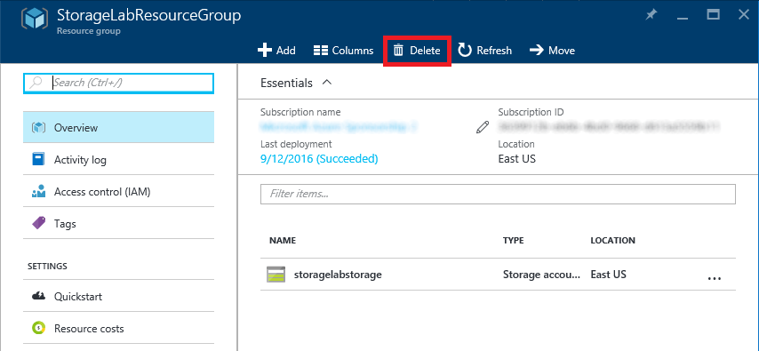
Deleting a resource group
-
Because deleting a resource group is a permanent action that can't be undone, you must confirm that you want to delete it. Do so by typing the name of the resource group into the box labeled
TYPE THE RESOURCE GROUP NAME. Then click Delete to delete the resource group and everything inside it.

Confirming resource-group deletion
After a few minutes, you will be notified that the resource group was deleted. If the deleted resource group still appears in the "Resource groups" blade, click that blade's Refresh button to update the list of resource groups. The deleted resource group should go away.
Summary
Here's a quick summary of the important concepts that you learned in this lab:
- Azure Storage is a set of services for storing data durably and reliably
- Azure Storage blobs can contain any type of data, just like files in a file system, and are frequently used for input and output to other Azure services
- The Azure Portal enables you to perform basic storage operations, such as creating storage accounts, creating blob containers, and uploading and downloading blobs
- The Microsoft Azure Storage Explorer runs on Windows, macOS, and Linux and supports many features the Azure Portal does not, such as the ability to generate shared-access signatures
- Shared-access signatures can be used to share blobs in private containers and limit the amount of time the blobs can be accessed, as well as limit access to read-only
- Storage accounts and other resources that are placed inside a resource group are easily deleted by deleting the resource group itself
Now that you're familiar with storage accounts, containers, and blobs, as well as some of the tools for managing them, you'll put your knowledge to work in subsequent labs. Knowing the basics of Azure Storage is an essential first step in working with Azure data services.
Copyright 2016 Microsoft Corporation. All rights reserved. Except where otherwise noted, these materials are licensed under the terms of the Apache License, Version 2.0. You may use it according to the license as is most appropriate for your project on a case-by-case basis. The terms of this license can be found in http://www.apache.org/licenses/LICENSE-2.0.